Econ 5120 Macroeconomic Theory
Consumption & Investment (chpt 16 & 17)
Introduction
High frequency data
Chapter 16: Consumption
Chapter 17: Investment
Powell Today
4:35 - 36:40
Chapter 16: Consumption
Neoclassical consumption
Based on rational individuals who choose the time path of their consumption to maximize utility
Subject to intertxemporal budget constraint.
We consider two periods: today and future.
The solution reinforces our view of the permanent income hypothesis: consumption in each period is a fraction of total wealth.
- Total wealth: financial resources, current income, present value of future income.
The solution can be expressed in terms of an Euler equation for consumption
- Individuals are indifferent between consuming a little more today and saving a little more for consumption in the future.
Chapter 16: Consumption
Individuals will seek to smooth out any shocks to current and future income, suggesting that marginal propensity to consume out of a temporary increase in current income is likely to be small.
Two forces counterbalance this low marginal propensity to consume.
Individuals who are constrained from borrowing in credit markets.
Individuals that engage inn precautionary savings.
Data is consistent with this theory - suggesting that the permanent-income model is a good benchmark for describing consumption of well-off individuals, while poorer consumers have a high marginal propensity to spend.
Aggregate data shows a rise in debt as ratio to income and a decline in personal savings in recent decades.
Neoclassical Consumption Model
Consumption over time - but we can make progress by thinking of time involving only two periods
- Today and the future
People earn income today and the future, consume today and the future, how much do they consume today and in the future?
Consumption model is based on two main elements:
Intertemporal budget constraint
Utility function
Intertemporal Budget Constraint
Irving has financial wealth of \(f_{today}\)
Two time periods \(today\) and \(future\) .
Let \(c\) represent consumption and \(y\) represent income, Irving faces the following two budget constraints:
\(c_{today} + (f_{future} - f_{today})=y_{today}\)
\(c_{future} = y_{future} + (1+R) f_{future}\)
- \((f_{future} - f_{today})\) represents savings for the future.
Intertemporal Budget Constraint
\(c_{today} + (f_{future} - f_{today})=y_{today}\)
\(c_{future} = y_{future} + (1+R) f_{future}\)
Example, no starting financial wealth:
\(f_{today} = 0, f_{future}=0\)
\(y_{today} - c_{today} = 0 \implies (f_{future}-f_{today}) = 0\)
\(y_{future} +(1+R)f_{future} - c_{future} = 0\)
- \(c_{future} = y_{future}\)
Intertemporal Budget Constraint
\(c_{today} + (f_{future} - f_{today})=y_{today}\)
\(c_{future} = y_{future} + (1+R) f_{future}\)
Example, no starting financial wealth, save 20 for future:
\(f_{today} = 0, f_{future}=20\)
\(y_{today} - c_{today} = 20 \implies (f_{future}-f_{today}) = 20\)
\(y_{future} +(1+R)f_{future} - c_{future} = 0\)
- \(c_{future} = y_{future} + (1+R)(20)\)
Intertemporal Budget Constraint
\(c_{today} + (f_{future} - f_{today})=y_{today}\)
\(c_{future} = y_{future} + (1+R) f_{future}\)
Example, no starting financial wealth, borrow 20 from future:
\(f_{today} = 0, f_{future}=-20\)
\(y_{today} - c_{today} = -20 \implies (f_{future}-f_{today}) = -20\)
\(y_{future} +(1+R)f_{future} - c_{future} = 0\)
- \(c_{future} = y_{future} + (1+R)(-20)\)
Intertemporal Budget Constraint
\(c_{today} + (f_{future} - f_{today})=y_{today}\)
\(c_{future} = y_{future} + (1+R) f_{future}\)
Example, start with 20 financial wealth, save 10 for future:
\(f_{today} = 10, f_{future}=10\)
\(y_{today} - c_{today} = -10 \implies (f_{future}-f_{today}) = 10\)
\(y_{future} +(1+R)f_{future} - c_{future} = 0\)
- \(c_{future} = y_{future} + (1+R)(10)\)
Intertemporal Budget Constraint
\(c_{today} + (f_{future} - f_{today})=y_{today}\)
\(c_{future} = y_{futue} + (1+R) f_{future}\)
Combine equations to get a two period constraint:
\(c_{today} + \frac{c_{future}}{1+R} = f_{today} +y_{today} + \frac{y_{future}}{1+R}\)
\(Present\:Value\:of\:Consumption = \underbrace{Financial\:Wealth + Human\: Wealth}_{Total\:Wealth}\)
Intertemporal Budget Constraint
\(Present\:Value\:of\:Consumption = \underbrace{Financial\:Wealth + Human\: Wealth}_{Total\:Wealth}\)
Present value of consumption
Human wealth - present value of labor income
Endowed financial wealth
At the end of life Irving has zero
Utility Function
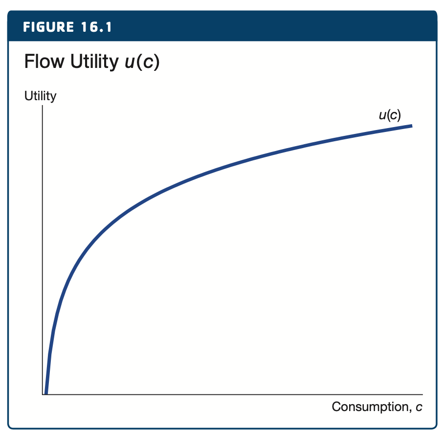
In order to quantify the value of consumption we use a Utility function.
If Irving consumes some amount, \(c\) , in a given period, we assume that he receives \(u(c)\) units of utility.
- We will call these units Utils
Classic assumption: the more Irving consumes the less utility Irving has - Law of diminishing marginal utility.
Lifetime Utility Function
\(U = u(c_{today})+\beta u(c_{future})\)
Lifetime Utility depends on two periods
The parameter, \(\beta\), captures the weight that Irving places on the future, relative to today.
If \(\beta =1\) then Irving treats utils received today and in the future equally.
Alternatively, if \(\beta <1\) , a given flow of utility is worth more when it occurs today.
Maximizing Utility
\(max_{c_{today}, c_{future}}\:U = u(c_{today})+\beta u(c_{future})\), subject to
\(c\_{today}+ \left( \frac{c_{future}}{1+R} \right) = \bar{X}\),
where \(\bar{X}\) denotes total wealth \(\bar{X}=f_{today} +y_{today} + \frac{y_{future}}{1+R}\)
Could solve with calculus
Instead use intuition.
Irving consumes a little more today the marginal utility will be \(u'(c_{today})\).
Irving consumes a little more tomorrow the marginal utility will be \(\beta u'(c_{future})\).
Combine with intertemporal budget constraint.
If he has maximized utility, Irving must be indifferent between consuming today or in the future.
Euler Equation
\(u'(c_{today})=\beta (1+R) u'(c_{future})\)
If Irving has maximized utility, he must be indifferent between consuming today or in the future
Why? if moving consumption from today to the future would increase utility, he would not be at a maximum.
This indifference equation is called the Euler equation.
- Marginal utility today = adjusted marginal utility in the future.
Solving Euler Equation
\(\frac{c_{today}}{c_{today}}=\beta (1+R)\)
In order to get an explicit solution for consumption we must specify a functional form for \(u(.)\).
A common choice is \(u(c)=log(c)\).
Diminishing marginal utility
\(u(c) = log(c) \implies u'(c)=\frac{1}{c}\)
The Euler Equation can be written as \(\frac{1}{c_{today}}=\beta (1+R) \frac{1}{c_{future}}\)
Solving Euler Equation
\(\frac{c_{today}}{c_{today}}=\beta (1+R)\)
Says that Irving will choose consumption so that the growth rate of consumption is the product of \(\beta\) and the interest he can earn on his savings \(1+R\).
The Euler equation in terms of consumption growth reveals another deep insight into macroeconomics.
Interest rates and growth rates are similar numbers, like 2%.
Irving chooses his consumption rate given \(R\). And so does everyone else.
Produces a general equilibrium value.
Euler Equation Insights
\(\frac{c_{today}}{c_{today}}=\beta (1+R)\)
Suppose the long-run growth rate of the economy and consumption (from Solow/Romer type models) is 2% per year.
If \(\beta = 1\) the Euler equation implies that the real interest rate will be 2%.
If \(\beta < 1\) , consumers prefer to get their utility today instead of the future driving interest rates a little higher than 2%.
The key here is the Euler equation explains how interest rates and growth rates are linked.
Effect of \(\uparrow R\) on Consumption
A higher interest rate will reduce the present value of labor income, therefore reducing consumption in the case of log utility. This force is called the wealth effect of higher interest rates because it works through the total wealth term.
The substitution effect of a higher interest rate is that current consumption becomes more expensive so consumers will tend to reduce consumption today.
The income effect of a higher interest rate says that consumers are now richer - because their current saving leads to more income in the future - which makes them want to consume more now.
In general it can go either way because these effects work in opposite directions.
Permanent-Income Hypothesis
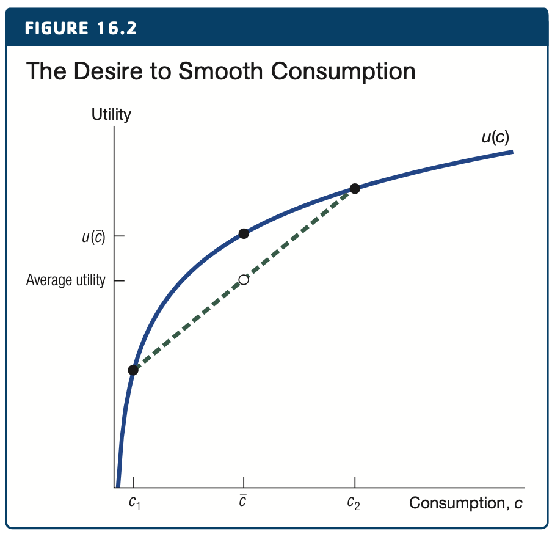
Consumption depends on some average value of income rather than just current income.
This is one implication of the neoclasssical consumption model.
Because of diminishing marginal utility Irving prefers to smooth consumption and take the average in both periods.
Lifetime utility is \(u(\bar{c})\) instead of average utility between \(c_1\) and \(c_2\).
In this example 1/2 is called the marginal propensity to consume, if income goes up $1 temporarily consumption rises by 1/2 that amount.
Source: Macroeconomics, Jones, 2021
Ricardian Equivalence
Ricardian approach to the government is that consumption depends on the present discounted value of taxes and in invariant to timing of the taxes.
Our intertemporal budget constraint comes after taxes.
If there is a large tax in the future we will consume less now.
If there is a large tax now we will consume less in the future.
Lack of transparency can lead to more/less consumption.
Borrowing Constraints
A key assumption in our model is that Irving was free to save or borrow in each period.
There are some consumers that do not have this option.
No financial wealth
Unable to borrow in credit markets
In this case the intertemporal budget constraint is \(c_{today} \le y_{today}\) .
If Irving is consuming less than income he can save for future.
If Irving is consuming all income the constraint is binding.
Random Walk Consumption
Is Irving’s income certain? Is yours?
Our neoclassical utility framework has not included uncertainty - all information about the future is known.
Some income increases are expected like a promotion after \(x\) years. Some are unexpected like winning the lottery.
Random walk view of consumption.
Because all known information should be incorporated into current consumption, changes in consumption should be modeled as uncertain.
Each step of the process is random, for instance %-age change is based on \(N(0,\sigma)\) .
Precautionary Savings
Its possible that Irving is facing a large drop in income, perhaps unemployment or disability.
Saving for such a case is called precautionary savings.
Such a consumer might save even when income and wealth are temporarily low, permanent income hypothesis would suggest borrowing.
As long as the possibility remains that income could fall even further, consumers may engage in precautionary savings to insure themselves against that outcome.
For example, savings rates rose sharply during the financial crisis.
Empirical Evidence
Euler equation and permanent-income hypothesis provide a useful description of consumption behavior of many households.
Particularly those above average wealth.
Low income household act as if they are facing a borrowing constraint.
Households are heterogeneous.
- Aggregate values do not reflect a one-for-one relationship.
Household Debt
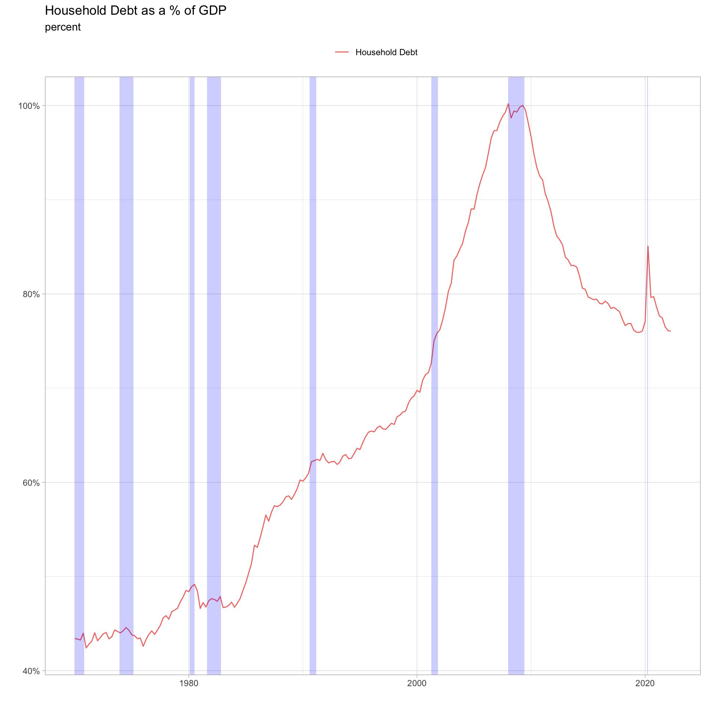
- Households have increased their borrowing from 40% in the 1970s to 100% in 2008.
- Deleveraging post GFC.
Personal Savings Rate
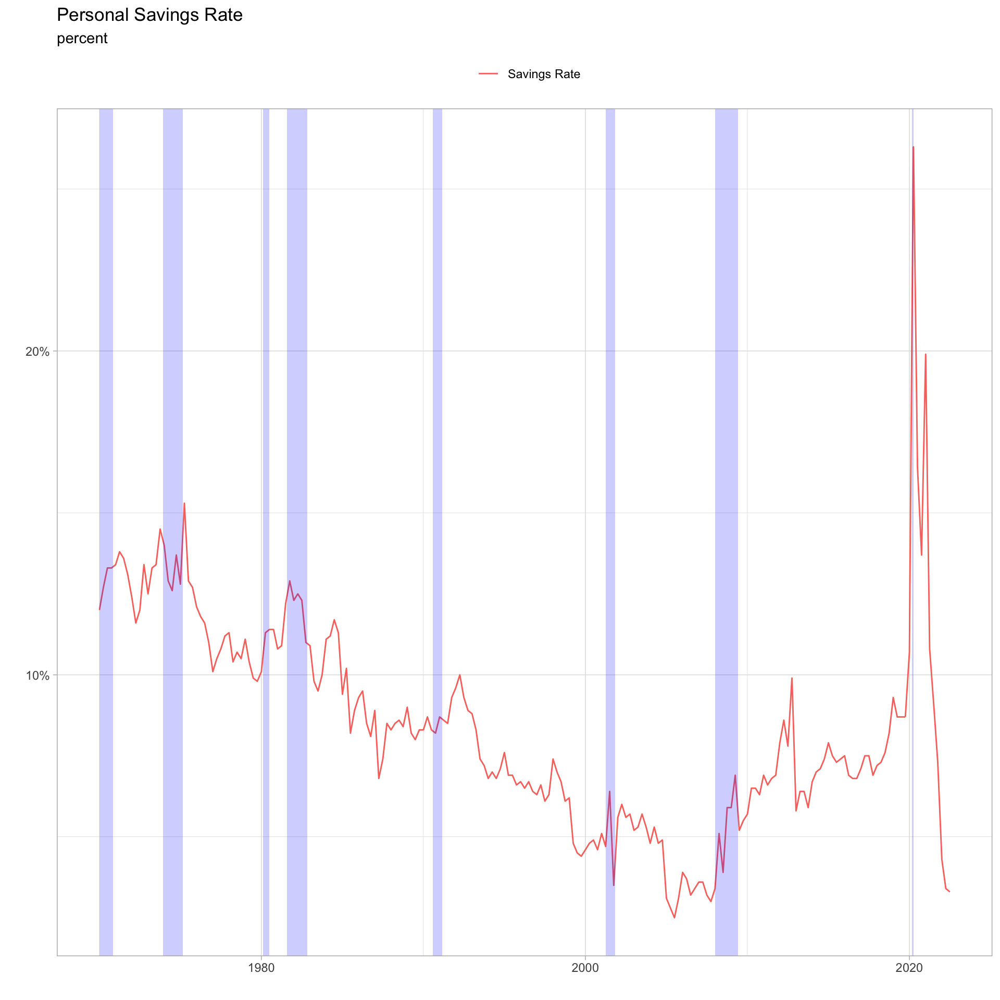
- Personal savings rate is the ratio of personal savings to disposable income (income post tax)
- Steady decline until GFC, back up to 6% before covid.
- Covid spike, now inflation.
Household Wealth
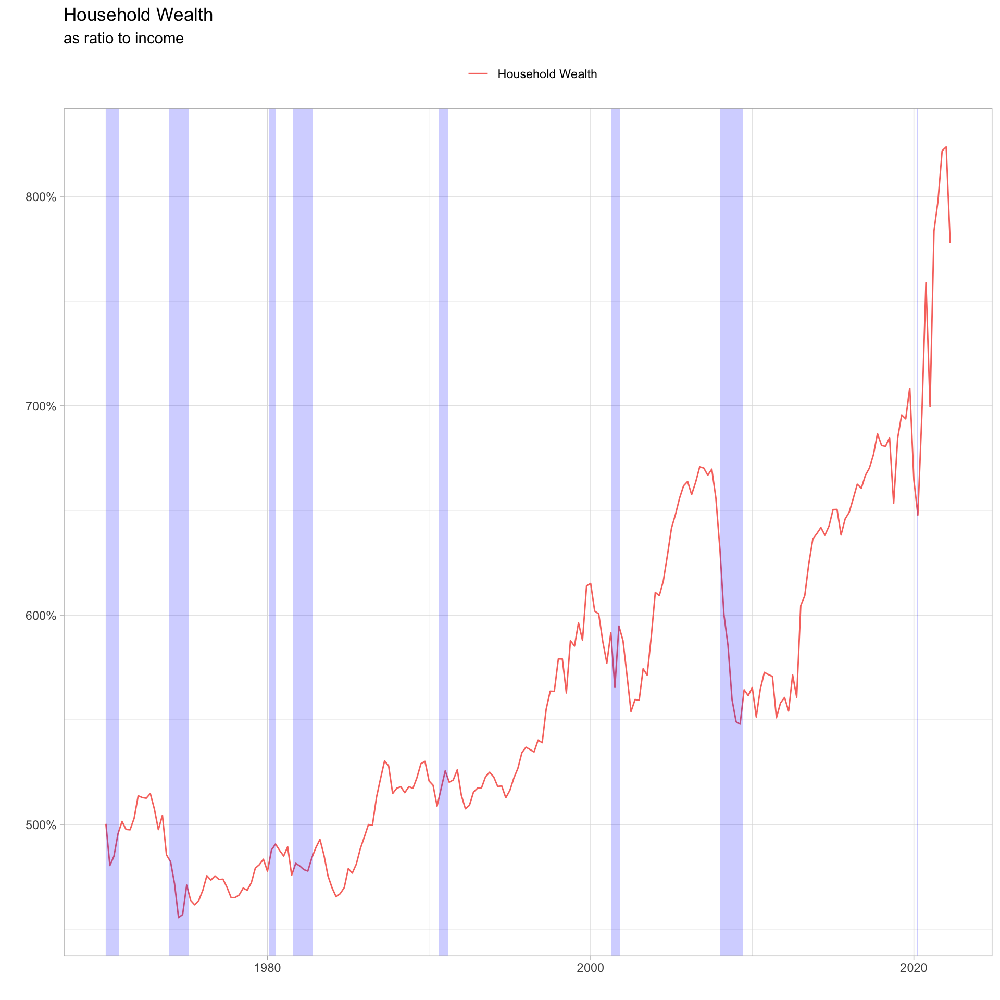
Household wealth is primarily asset price driven.
Heterogeneous - most of the wealth is held by the top 10%.
Chapter 17: Investment
Investment of all kinds are ways of transferring resources from the present to the future:
- Physical capital, Human capital, New Ideas, Financial Assets
Arbitrage equation is a fundamental tool for studying investment of all types.
It says that two investments of equal riskiness must have the same return (otherwise everyone will flock to the investment with the higher return).
Typically this equation has the form that says the interest rate is equal to the sum of a dividend return and a capital gain return, both in percentage terms.
The arbitrage argument applied to physical capital leads to a key result: firms invest in physical capital until marginal product of capital falls to equal the user cost of capital.
Chapter 17: Investment
The user cost of capital is the total economic cost of using one unit of capital for one period.
It typically involves the interest rate, depreciation rate, and any capital gain/loss.
Can also be augmented by taxation or subsidies.
Applying the arbitrage argument to financial investments lead to a simple theory of stock prices: the price of a stock is the present discounted value of dividends.
- Written as the ratio of the current dividend to the difference between the interest rate and the capital gain.
Chapter 17: Investment
If financial markets are informationally efficient, then stock prices will reflect all publicly available information.
Only unexpected news will change stock prices, making them equally likely to go up or down (apart from a trend return).
Stocks prices will follow a random walk.
Arbitrage argument applied to housing means that the price of a house should equal the present discounted value of the amount the house can be rented for (adjusted for leverage).
Inventory investment is highly pro-cyclical, rising sharply in booms and falling in recessions.
Investment
Investment can be into new ideas, human capital, financial assets.
In the national income accounting sense it refers to the accumulation of physical capital:
- Roads, Houses, Computers, Machine Tools
Key: it is by investing that our actions today influence our opportunities in the future.
Investment as GDP Share
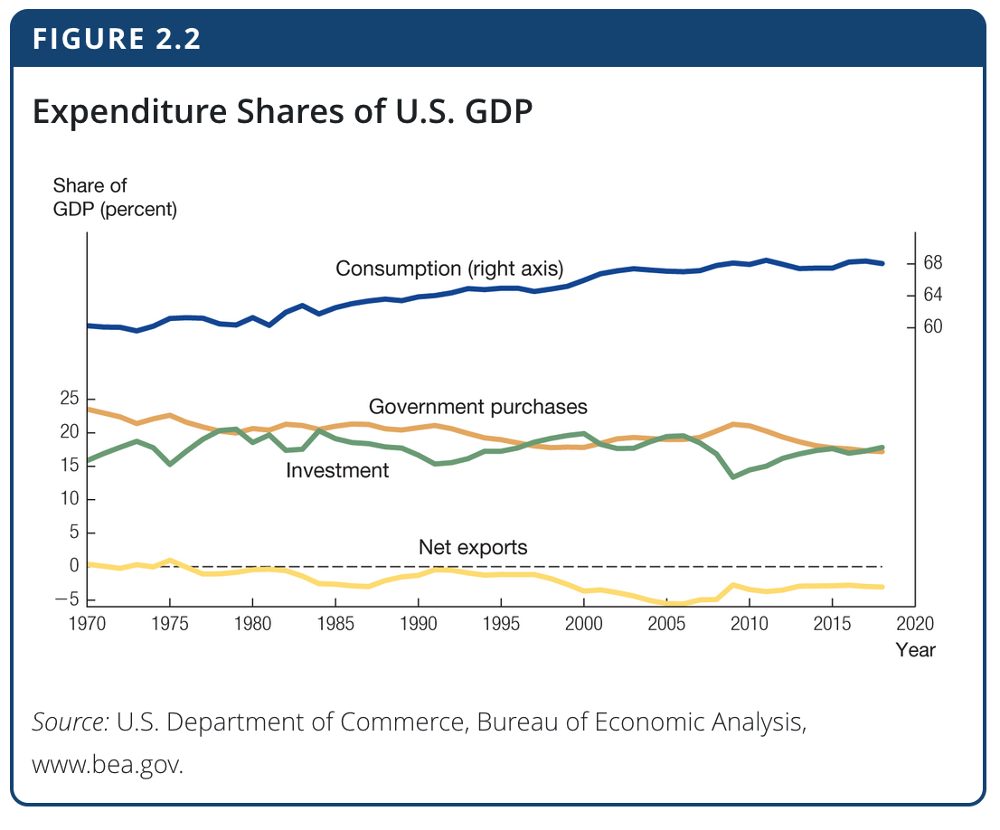
Investment typically makes up 15-20% of US GDP
During 2006-2009 investment share of GDP fell from 20% to 13%.
- Typically investment fluctuates more than consumption, falls disproportionately.
As we have seen in our long-run models investment is the heart of economic growth.
Investment Decision
Amazon / Walmart / Gino’s East
Model of production, Cobb-Douglas: \(Y=\bar{A}K^{1/3}L^{2/3}\)
Businesses should invest in physical capital until the MPC falls equal to the rental price of capital, \(R\).
- Invest until \(MPK=\frac{1}{3}\bar{A} \left( \frac{L}{K}\right)^{2/3} = \frac{1}{3} \frac{Y}{K} = R\)
Investment Arbitrage Equation
Investors have two possible investments
Each have the same amount of risk.
A profit maximizing investor will choose the investment that offers the larger profit.
This bids up the price of that investment.
In the end the two investments will yield the same.
This is the arbitrage equation.
Gino’s East
Suppose Gino’s East can buy a pizza oven for \(p_k\).
Gino’s can do two things with cash on hand:
Put money in the bank for one year and earn \(R \times p_k\)
Buy a pizza oven for one year year and earn \(MPK + \Delta p_k\)
\(\Delta p_k\) is the capital gain/loss on the oven
Arbitrage equation: \(R \times p_k = MPK + \Delta p_k\)
Rearrange: \(MPK = R - \frac{\Delta p_k}{p_k}\)
- Note: with if no capital gains/losses this is our solution from long-term growth chapters.
User Cost of Capital
\[ \underbrace{R \times p_k}_{return\:from\:bank} = \underbrace{MPK + \Delta p_k}_{return\:from\:oven} \]
Richer solution than long-run growth equation
- Price of ovens changing over time
Define growth rate of price: \(\frac{\Delta p_k}{p_k}\)
Capital gain (+), Capital loss (-)
Start the year with an oven worth $10,000, by the end of the year it is worth $8,000. There is a capital loss of -20%.
User Cost of Capital
\[ MPK = \underbrace{R + \bar{d} - \frac{\Delta p_k}{p_k}}_{user\:cost\:of\:capital} \]
Many reasons why capital loss is common: depreciation, technology, etc.
Capital gain is common in structures on land, which becomes increasingly scarce.
Place depreciation explicitly in the equation.
Investment Decision
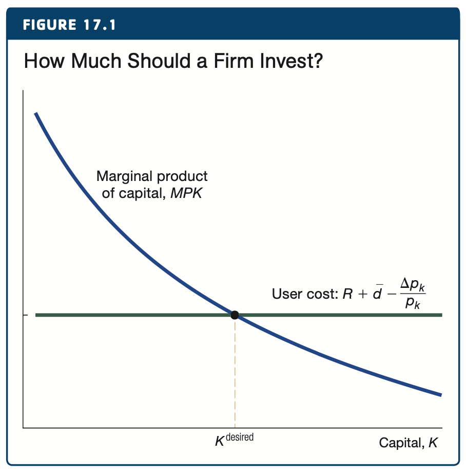
- A firm should invest in capital until the value of the extra output that capital produces falls to equal the user cost.
Investment Decision Taxes
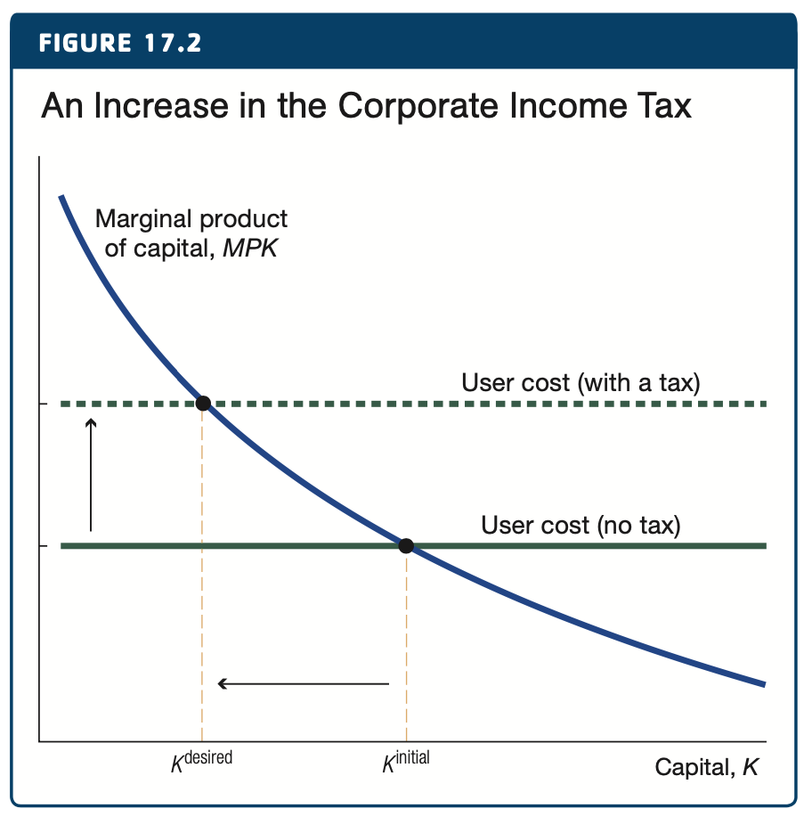
\[ \underbrace{R}_{cost\:of\:funds}=\underbrace{(1-\tau)MPK-\bar{d}+\frac{\Delta p_k}{p_k}}_{return\:from\:investing} \]
\[ MPK = \underbrace{\frac{R+\bar{d}-\frac{\Delta p_k}{p_k}}{1-\tau}}_{user\:cost\:of\:capital} \]
Corporate Tax Rates
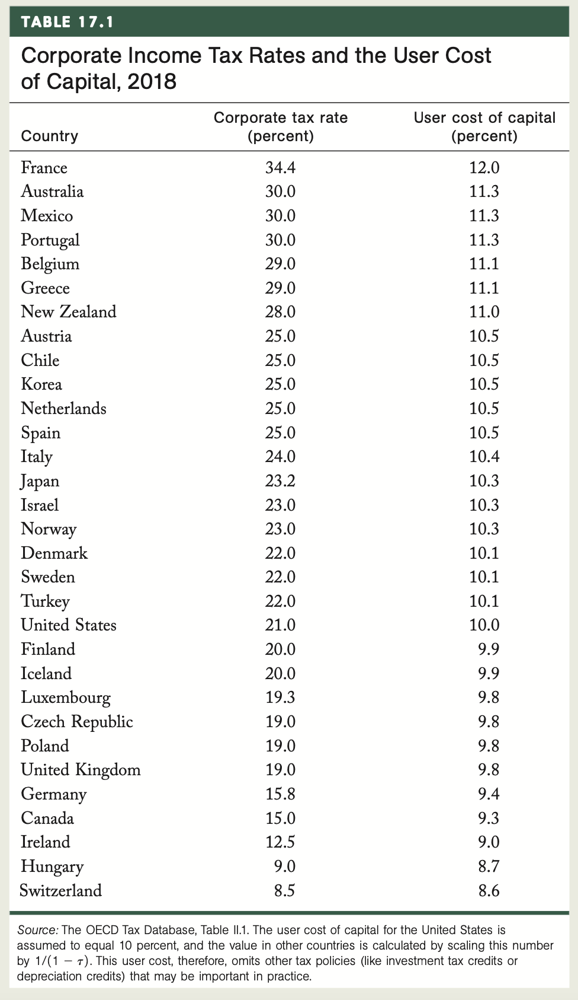Desired Capital to Investment
\[ MPK=\frac{1}{3}\bar{A} \left( \frac{L}{K}\right)^{2/3} = \frac{1}{3} \frac{Y}{K} \]
MPK equals UCC
\[ \frac{Y}{K}=3 \times uc \]
accumulation equation:
\[ K_{t+1}= I_t+(1-\bar{d})K_t \implies \frac{\Delta K_{t+1}}{K_t} =\frac{I_t}{Y_t}\frac{Y_t}{K_t}-\bar{d} \]
define desired growth rate of capital stock \(g_K \equiv \Delta K_{t+1}/K_t\) and combine
\[ \frac{I_t}{Y_t}=\frac{g_K+\bar{d}}{3 \times uc} \]
Higher user cost of capital leads to lower investment.
The Big Picture
\[ \frac{I_t}{Y_t}=\frac{g_K+\bar{d}}{3 \times uc} \]
This equation for investment rate can replace the constant, \(\bar{s}\), that we used in our long-run growth models.
Combining this result with the consumption Euler equation we have a full theory of long-run growth, including micro-foundations.
Long-run models pin down growth rate including growth rate of capital.
The Euler equation for consumption pins down the long-run interest rate.
MPK = User Cost of Capital pins down capital to output ratio.
Investment rate pins down consumption share of GDP.
Stock Market and Investment
Capital and investment refer to accumulation of physical (or intellectual) capital in macroeconomics.
Investment often used in finance.
- Financial capital, Net worth of an institution, making a financial investment into a mutual fund
Main similarity: arbitrage equation.
Stock Market Arbitrage Eq
\[ \underbrace{R \times p_s}_{return\:from\:bank} = \underbrace{dividend + \Delta p_s}_{return\:from\:the\:stock} \]
Investor can put money in bank account and earn \(R\) per year.
Investor can put money in stock market and earn a dividend plus capital gain/loss per year.
- Note: we assume the same risk!
\(R = \underbrace{\frac{dividend}{p_s}}_{\%\:div\:return} + \underbrace{\frac{\Delta p_s}{p_s}}_{\%\:capital\:gain}\)
Price of a Stock
\[ R = \underbrace{\frac{dividend}{p_s}}_{\%\:div\:return} + \underbrace{\frac{\Delta p_s}{p_s}}_{\%\:capital\:gain} \]
Solve for the price of a stock.
\(p_s = \frac{dividend}{R-\frac{\Delta p_s}{p_s}} = \frac{dividend}{interest\:rate - capital\:gain}\)
Essentially the price of a stock will equal the present discounted value of the dividends that the stock will pay.
Suppose capital gain is zero, dividend is a constant $10 per share, and interest rate is 5%.
The price of the stock is 10/.05=$200
P/E Ratios
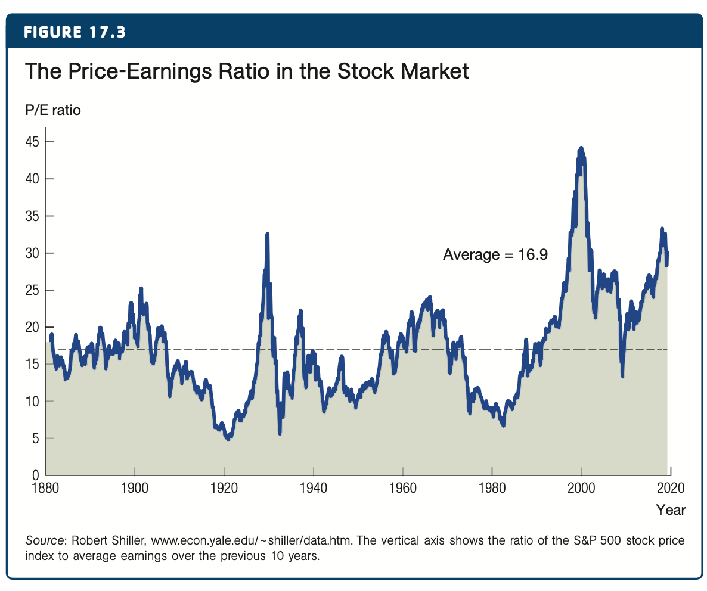
- Above we covered a simple model that assumed a constant risk per stock.
- Instead we look at a bit more complex model price-earnings ratio.
\(\frac{p_s}{earnings}=\frac{dividend/earnings}{interest\:rate - capital\:gains}\)
Volatile Series:
- Should be stable if dividend to earnings ratio is stable and the difference between real interest rate and the growth rate of dividends is stable.
Efficient Markets
Markets are informationally efficient if financial prices fully and correctly reflect all available information.
Let’s say Google will announce earnings next week, if it is in line with what everyone expects it should not move.
According to this theory the only thing that moves prices is unexpected news. In this case the stock can move up or down.
When this is the case the stock price follows a random walk.
Actively managed mutual funds - evidence seems to suggest a random walk (investing in the index yields higher returns).
Components of Investment
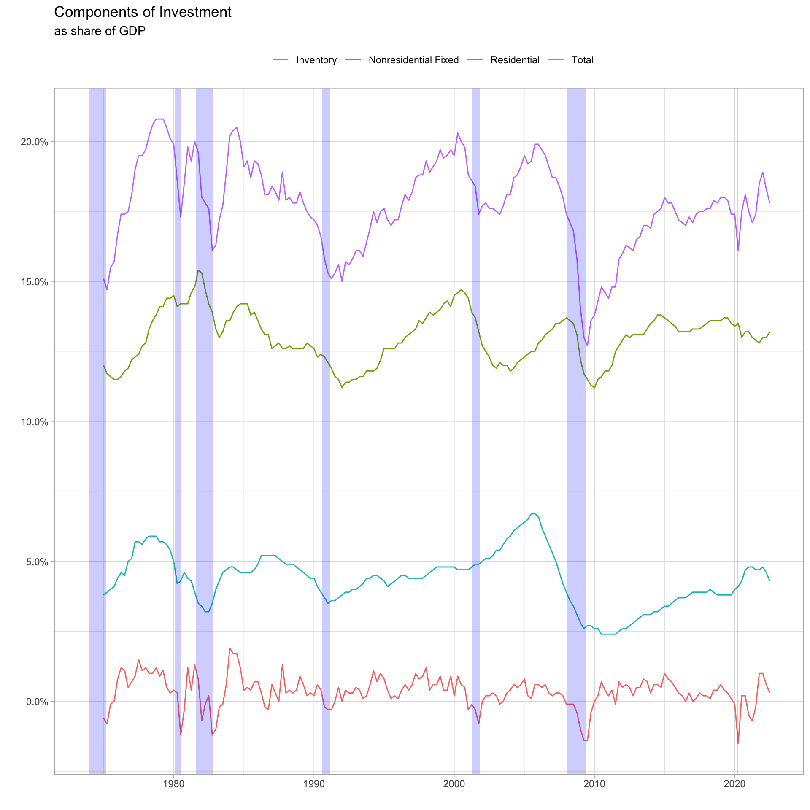
- Nonresidential fixed - equipment and structures purchased by businesses as well as IP.
- Residential fixed - new housing purchased by households.
- Inventory Investment - goods that have been produced by firms but have not been sold. Usually positive, but turns negative during recessions.
Residential Investment
\[ \underbrace{R \times down\:payment}_{return\:from\:saving}=\underbrace{Rent-\bar{d}P^{house}-R(1-\tau)(P^{house}-down\:payment)}_{return\:from\:investing\:in\:condo} \]
Dividing both sides by the price of the condo:
\[ P^{house}=\frac{rent}{\tau\bar{x}R + (1-\tau)R+\bar{d}-\frac{\Delta P^{house}}{P^{house}}} \]
where \(\bar{x}=down\:payment/P^{house}\).
The price of a condo is the present discounted value of the amount you can earn by renting out the condo.
Inventory
Inventories are goods that have been produced but not yet sold.
Small but cyclical component of investment.
Production smoothing
Pipeline theory
Stockout avoidance
Next week
Read chapter 17-18
Last class
Final will be an assignment due 12/17

ECON 5120 | Scott Payseur